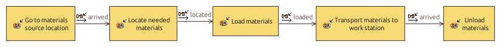

[As-Is] Reposition of materials
OperationalProcess
02 - Materials Manipulation Mobile Robot > 02 - Materials Manipulation Mobile Robot > Operational Analysis > Operational Capabilities > Efficiently supply manufacturing materials > [As-Is] Reposition of materialsNo description.
Involved activities
| Activity | Involvement Description |
|---|---|
Involved interactions
| Interaction | Involvement Description |
|---|---|
Owned diagrams
OPD AsIs Reposition of materials
